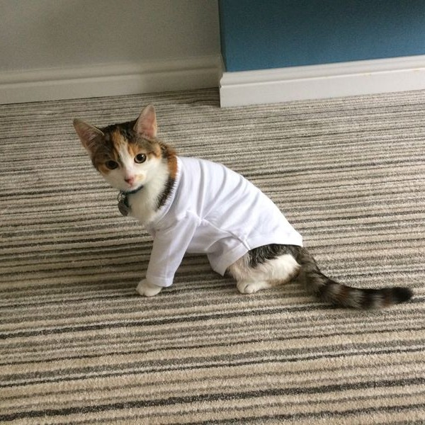
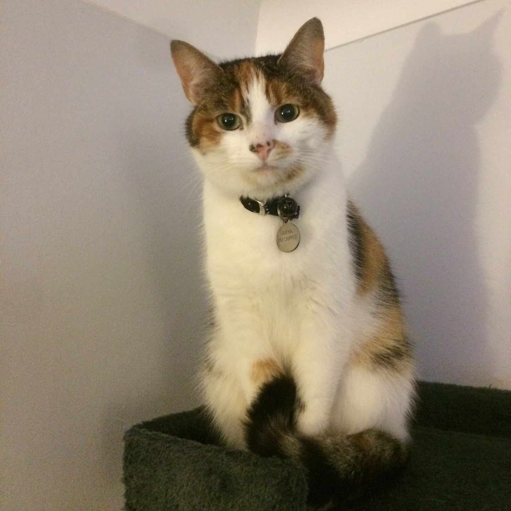
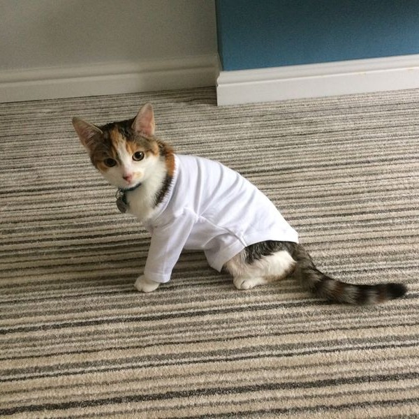
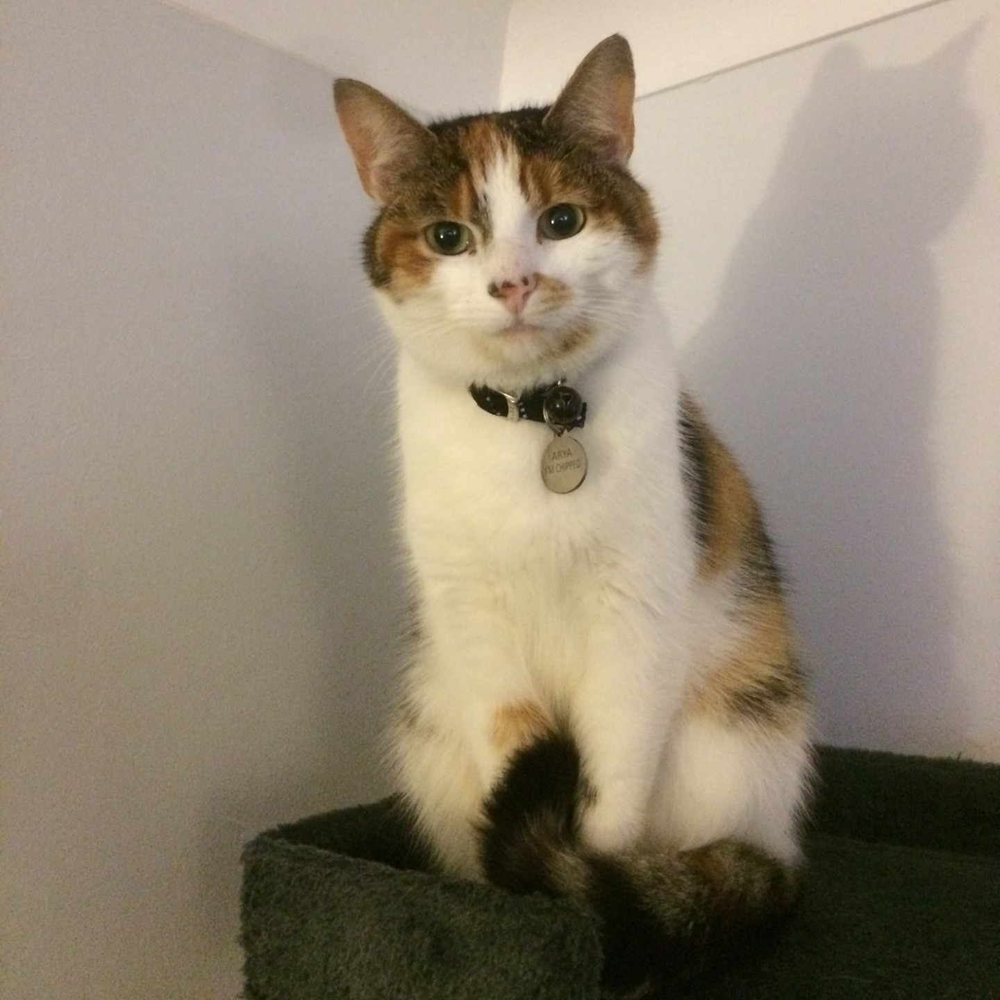

2.1 Review the ongoing use of IT tools and change approach as needed – in making your own website, are you happy with the tools you used? E.g. Visual Studio Code, Trello
I'm completely happy with the choice of tools. Trello has been really useful for task management and visual studio seems to support the project really well. I made a mistake by not storing files on github as somehow I managed to delete the most recent file of one of my pages and wasn't able to use github to retrieve it, given I hadn't backed it up...
2.2 Describe whether the IT tools selected were appropriate E.g. Visual Studio Code, Trello
The tools used seem highly appropriate. Visual studio allowing access to image files and CSS files for styling is great. Visual Studio and Trello are both very user friendly so despite not having used them for very long, they seem to have all the functionality that I require at the moment and generally seem quite intuitive.
Trello has allowed me to keep track of details for use within the website in advance of inserting them into the HTML code and being able to label different tasks and prioritize the important ones has been extremely useful.
I fell foul of not backing up my code to github as I somehow deleted the wrong "duplicate file". Ultimately, this cost me around 30-60 mins so could have been a lot worse...
2.3 Assess the strengths and weaknesses of your final project – are you happy with your website? Why? Why not? You should review it on the website itself in the interests of openness. What would you change?
I am happy with my website. Having never coded prior to this course and having worked with HTML and CSS for only a few days, I am proud to have delivered it. Often I view things through a continuous improvement lens so there are a multitude of things that I would change - graphical improvements - especially being mindful of different screen sizes and devices, more functionality generally and having moving elements would have been great.
2.4 Describe further improvements you can make to your project
Making the website functional across multiple devices and screen sizes would be ideal. Some of the design loses its impact as a result of this. It would be awesome to be able to include more video content or interactive elements. Links to photo libraries or my social media would have made the finished article more interesting. If I had the knowledge and time I would have liked to do something more exciting with the layout.
2.5 Review outcomes to make sure they match requirements and are fit for purpose
Although the styling of my website still needs some work, I believe that it has met the criteria. I chose an easy to view style that is accessible. I researched the relevant legal criteria as displayed and decided on a design (didn't quite make it to full vision)
I used technologies that are fit for the task - Trello, Slack, Visual Studio, Git and languages that are largely thought as the best for the task - HTML and CSS.
I intend to continue styling the website beyond to make it easier to navigate and also better designed graphically.
The navigation is simple and the information is clear.Overall, I do feel that the criteria have been met, though not as fully as I would have liked for reasons mentioned.
 


